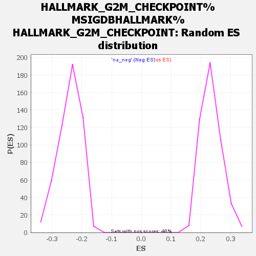

Profile of the Running ES Score & Positions of GeneSet Members on the Rank Ordered List
| Dataset | my_ranked_genes |
| Phenotype | NoPhenotypeAvailable |
| Upregulated in class | na_pos |
| GeneSet | HALLMARK_G2M_CHECKPOINT%MSIGDBHALLMARK%HALLMARK_G2M_CHECKPOINT |
| Enrichment Score (ES) | 0.71584946 |
| Normalized Enrichment Score (NES) | 3.0534174 |
| Nominal p-value | 0.0 |
| FDR q-value | 0.0 |
| FWER p-Value | 0.0 |
| SYMBOL | RANK IN GENE LIST | RANK METRIC SCORE | RUNNING ES | CORE ENRICHMENT | |
|---|---|---|---|---|---|
| 1 | UBE2S | 35 | 5.464 | 0.0138 | Yes |
| 2 | MT2A | 50 | 5.218 | 0.0283 | Yes |
| 3 | HMGN2 | 83 | 4.868 | 0.0405 | Yes |
| 4 | UBE2C | 88 | 4.816 | 0.0545 | Yes |
| 5 | STIL | 113 | 4.565 | 0.0663 | Yes |
| 6 | MCM3 | 150 | 4.304 | 0.0766 | Yes |
| 7 | CDC20 | 151 | 4.303 | 0.0894 | Yes |
| 8 | NUSAP1 | 155 | 4.264 | 0.1018 | Yes |
| 9 | CCNA2 | 160 | 4.253 | 0.1140 | Yes |
| 10 | AURKA | 184 | 4.125 | 0.1247 | Yes |
| 11 | HMGB3 | 209 | 4.029 | 0.1350 | Yes |
| 12 | ESPL1 | 218 | 4.000 | 0.1463 | Yes |
| 13 | EGF | 219 | 3.998 | 0.1581 | Yes |
| 14 | MKI67 | 221 | 3.992 | 0.1698 | Yes |
| 15 | FBXO5 | 224 | 3.984 | 0.1814 | Yes |
| 16 | CDC45 | 238 | 3.942 | 0.1922 | Yes |
| 17 | CHAF1A | 240 | 3.932 | 0.2037 | Yes |
| 18 | PTTG1 | 259 | 3.880 | 0.2140 | Yes |
| 19 | TROAP | 262 | 3.871 | 0.2253 | Yes |
| 20 | SMC4 | 264 | 3.864 | 0.2367 | Yes |
| 21 | AURKB | 266 | 3.854 | 0.2480 | Yes |
| 22 | MYBL2 | 281 | 3.805 | 0.2583 | Yes |
| 23 | TOP2A | 282 | 3.803 | 0.2695 | Yes |
| 24 | NOLC1 | 290 | 3.782 | 0.2802 | Yes |
| 25 | SUV39H1 | 331 | 3.678 | 0.2884 | Yes |
| 26 | CENPA | 340 | 3.662 | 0.2987 | Yes |
| 27 | PLK1 | 343 | 3.659 | 0.3093 | Yes |
| 28 | CDKN2C | 350 | 3.641 | 0.3197 | Yes |
| 29 | KIF11 | 351 | 3.638 | 0.3304 | Yes |
| 30 | HMMR | 354 | 3.627 | 0.3410 | Yes |
| 31 | KIF20B | 379 | 3.560 | 0.3499 | Yes |
| 32 | MCM5 | 388 | 3.550 | 0.3599 | Yes |
| 33 | BRCA2 | 402 | 3.525 | 0.3694 | Yes |
| 34 | BIRC5 | 407 | 3.521 | 0.3796 | Yes |
| 35 | MCM6 | 426 | 3.481 | 0.3886 | Yes |
| 36 | CENPE | 431 | 3.471 | 0.3986 | Yes |
| 37 | CDC6 | 447 | 3.432 | 0.4078 | Yes |
| 38 | DDX39A | 457 | 3.411 | 0.4172 | Yes |
| 39 | CDC25B | 463 | 3.406 | 0.4270 | Yes |
| 40 | SNRPD1 | 470 | 3.387 | 0.4366 | Yes |
| 41 | SMC2 | 473 | 3.375 | 0.4464 | Yes |
| 42 | AMD1 | 484 | 3.357 | 0.4556 | Yes |
| 43 | NEK2 | 512 | 3.309 | 0.4636 | Yes |
| 44 | MEIS1 | 532 | 3.284 | 0.4720 | Yes |
| 45 | KNL1 | 540 | 3.273 | 0.4812 | Yes |
| 46 | MCM2 | 546 | 3.267 | 0.4905 | Yes |
| 47 | TACC3 | 550 | 3.266 | 0.5000 | Yes |
| 48 | SMC1A | 565 | 3.238 | 0.5086 | Yes |
| 49 | POLA2 | 594 | 3.196 | 0.5162 | Yes |
| 50 | LBR | 597 | 3.194 | 0.5255 | Yes |
| 51 | E2F2 | 606 | 3.171 | 0.5343 | Yes |
| 52 | INCENP | 616 | 3.152 | 0.5430 | Yes |
| 53 | DTYMK | 623 | 3.129 | 0.5519 | Yes |
| 54 | RBM14 | 626 | 3.124 | 0.5610 | Yes |
| 55 | CENPF | 685 | 3.046 | 0.5661 | Yes |
| 56 | TFDP1 | 699 | 3.032 | 0.5742 | Yes |
| 57 | HNRNPD | 720 | 2.998 | 0.5817 | Yes |
| 58 | PLK4 | 787 | 2.912 | 0.5859 | Yes |
| 59 | MAD2L1 | 801 | 2.902 | 0.5936 | Yes |
| 60 | NASP | 809 | 2.892 | 0.6016 | Yes |
| 61 | CDK4 | 818 | 2.884 | 0.6096 | Yes |
| 62 | CCNB2 | 857 | 2.831 | 0.6154 | Yes |
| 63 | NCL | 865 | 2.826 | 0.6233 | Yes |
| 64 | CKS1B | 907 | 2.785 | 0.6288 | Yes |
| 65 | KIF15 | 912 | 2.779 | 0.6367 | Yes |
| 66 | SRSF10 | 954 | 2.739 | 0.6421 | Yes |
| 67 | DBF4 | 970 | 2.729 | 0.6491 | Yes |
| 68 | PDS5B | 993 | 2.709 | 0.6557 | Yes |
| 69 | DKC1 | 1003 | 2.694 | 0.6630 | Yes |
| 70 | CDKN3 | 1090 | 2.611 | 0.6650 | Yes |
| 71 | ILF3 | 1103 | 2.601 | 0.6719 | Yes |
| 72 | TTK | 1134 | 2.575 | 0.6775 | Yes |
| 73 | POLE | 1253 | 2.465 | 0.6768 | Yes |
| 74 | BARD1 | 1279 | 2.443 | 0.6824 | Yes |
| 75 | RAD21 | 1303 | 2.424 | 0.6880 | Yes |
| 76 | TRA2B | 1363 | 2.374 | 0.6911 | Yes |
| 77 | RBL1 | 1409 | 2.340 | 0.6950 | Yes |
| 78 | SLC12A2 | 1415 | 2.336 | 0.7015 | Yes |
| 79 | EZH2 | 1494 | 2.272 | 0.7030 | Yes |
| 80 | ATF5 | 1672 | 2.153 | 0.6975 | Yes |
| 81 | CTCF | 1809 | 2.071 | 0.6946 | Yes |
| 82 | PRC1 | 1828 | 2.058 | 0.6994 | Yes |
| 83 | ORC6 | 1980 | 1.961 | 0.6951 | Yes |
| 84 | GINS2 | 1982 | 1.960 | 0.7008 | Yes |
| 85 | CDKN1B | 2044 | 1.927 | 0.7024 | Yes |
| 86 | RPS6KA5 | 2060 | 1.916 | 0.7071 | Yes |
| 87 | CASP8AP2 | 2182 | 1.845 | 0.7044 | Yes |
| 88 | CHEK1 | 2330 | 1.769 | 0.6998 | Yes |
| 89 | CKS2 | 2385 | 1.736 | 0.7013 | Yes |
| 90 | SAP30 | 2466 | 1.692 | 0.7010 | Yes |
| 91 | E2F4 | 2482 | 1.684 | 0.7050 | Yes |
| 92 | SLC7A1 | 2508 | 1.666 | 0.7082 | Yes |
| 93 | HMGA1 | 2518 | 1.663 | 0.7125 | Yes |
| 94 | STAG1 | 2563 | 1.638 | 0.7144 | Yes |
| 95 | TRAIP | 2678 | 1.576 | 0.7114 | Yes |
| 96 | NUMA1 | 2768 | 1.532 | 0.7100 | Yes |
| 97 | HIRA | 2886 | 1.477 | 0.7065 | Yes |
| 98 | KPNA2 | 2904 | 1.468 | 0.7097 | Yes |
| 99 | DMD | 2919 | 1.460 | 0.7131 | Yes |
| 100 | TLE3 | 2943 | 1.450 | 0.7158 | Yes |
| 101 | CUL4A | 3034 | 1.411 | 0.7140 | No |
| 102 | NSD2 | 3098 | 1.382 | 0.7139 | No |
| 103 | NUP98 | 3198 | 1.330 | 0.7112 | No |
| 104 | SFPQ | 3230 | 1.311 | 0.7130 | No |
| 105 | MYC | 3603 | 1.140 | 0.6914 | No |
| 106 | EWSR1 | 3618 | 1.131 | 0.6938 | No |
| 107 | FOXN3 | 3872 | 1.032 | 0.6799 | No |
| 108 | PURA | 4136 | 0.931 | 0.6651 | No |
| 109 | EFNA5 | 4346 | 0.858 | 0.6536 | No |
| 110 | CDC27 | 4434 | 0.828 | 0.6503 | No |
| 111 | KIF23 | 4513 | 0.801 | 0.6474 | No |
| 112 | SQLE | 4750 | 0.718 | 0.6337 | No |
| 113 | WRN | 5994 | 0.338 | 0.5515 | No |
| 114 | SLC38A1 | 6173 | 0.294 | 0.5405 | No |
| 115 | PAFAH1B1 | 6385 | 0.245 | 0.5271 | No |
| 116 | CBX1 | 6789 | 0.159 | 0.5006 | No |
| 117 | E2F3 | 7030 | 0.115 | 0.4849 | No |
| 118 | YTHDC1 | 7136 | 0.097 | 0.4781 | No |
| 119 | TNPO2 | 7294 | 0.071 | 0.4678 | No |
| 120 | CHMP1A | 7497 | 0.038 | 0.4544 | No |
| 121 | SLC7A5 | 7977 | -0.041 | 0.4225 | No |
| 122 | PRIM2 | 8589 | -0.150 | 0.3820 | No |
| 123 | HUS1 | 8837 | -0.200 | 0.3661 | No |
| 124 | ARID4A | 9104 | -0.255 | 0.3490 | No |
| 125 | SMARCC1 | 9718 | -0.414 | 0.3092 | No |
| 126 | KATNA1 | 10002 | -0.488 | 0.2917 | No |
| 127 | FANCC | 10030 | -0.501 | 0.2914 | No |
| 128 | SS18 | 10048 | -0.506 | 0.2918 | No |
| 129 | MNAT1 | 10848 | -0.784 | 0.2406 | No |
| 130 | NOTCH2 | 10926 | -0.811 | 0.2379 | No |
| 131 | PML | 11028 | -0.853 | 0.2336 | No |
| 132 | HIF1A | 11058 | -0.868 | 0.2342 | No |
| 133 | MAPK14 | 11501 | -1.050 | 0.2078 | No |
| 134 | UCK2 | 11545 | -1.073 | 0.2080 | No |
| 135 | JPT1 | 11725 | -1.153 | 0.1995 | No |
| 136 | CUL5 | 12065 | -1.323 | 0.1807 | No |
| 137 | TGFB1 | 12086 | -1.329 | 0.1833 | No |
| 138 | MARCKS | 13212 | -2.018 | 0.1139 | No |
| 139 | CCND1 | 14643 | -3.708 | 0.0292 | No |
